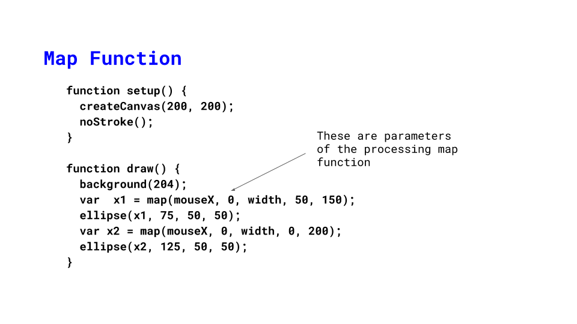
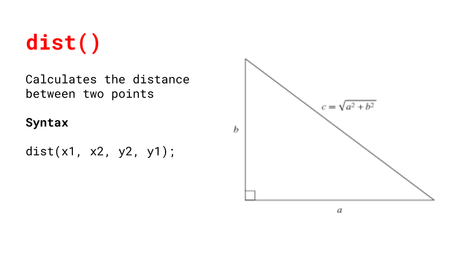
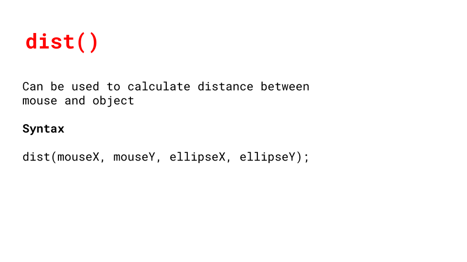
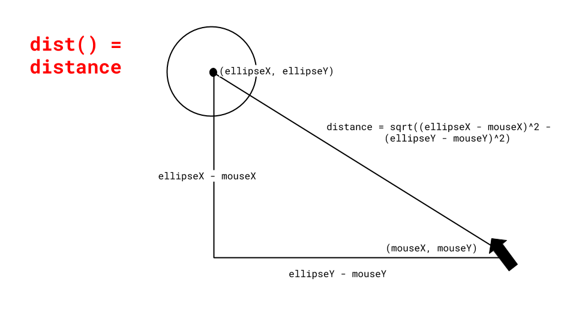

What is a function?
A function is a chunk or snippet of code that accomplishes a specific task
We've already been using functions that p5.js has built for us! Remember function draw(), function setup(), circle(xPos, yPos, diameter), etc.

Why do we use functions?
-
-> Reusability
-
-> Organization
-> Makes our code concise
Structure of a function
To create a function you need a name, parameters (what will change every time you use the function) and your function code.
Function parameters
Function parameters are values that we can vary (pass through the function) every time we want to use our function

Useful p5 functions



